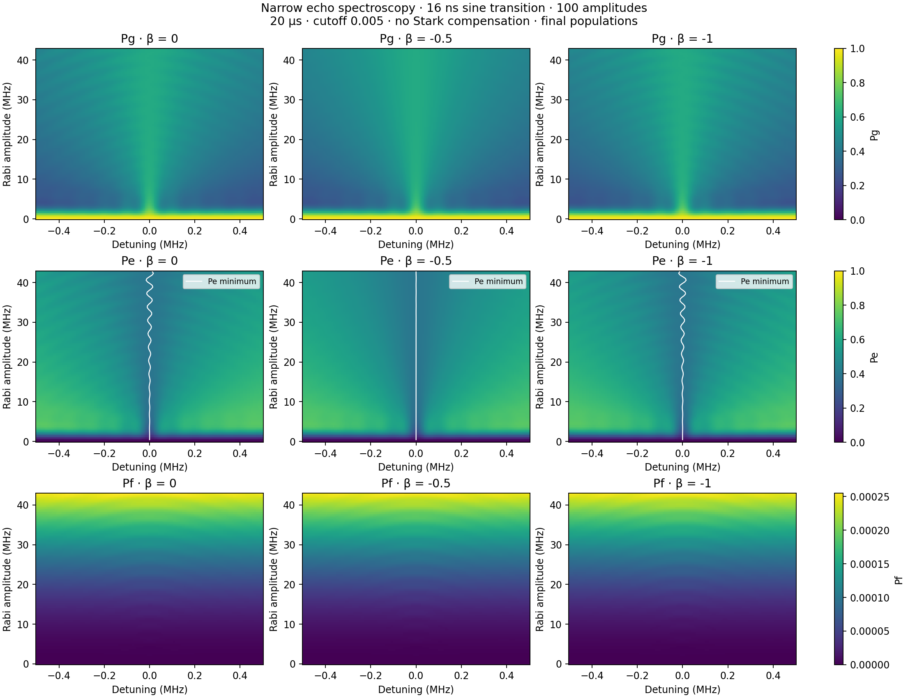
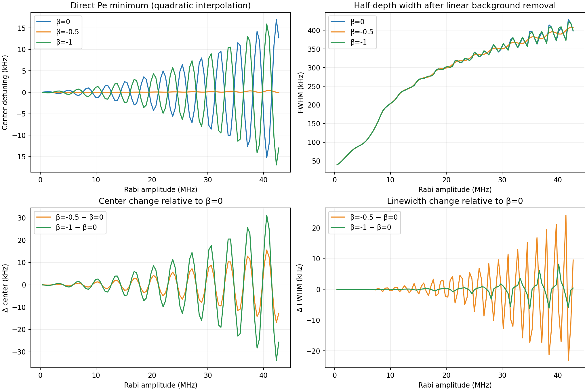
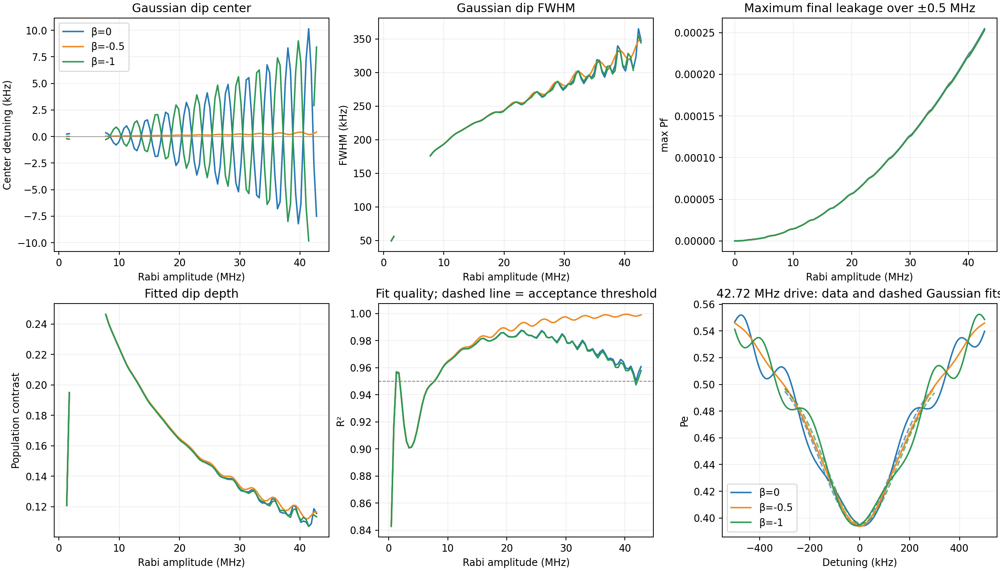
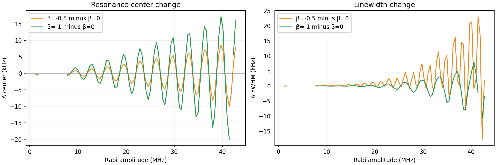
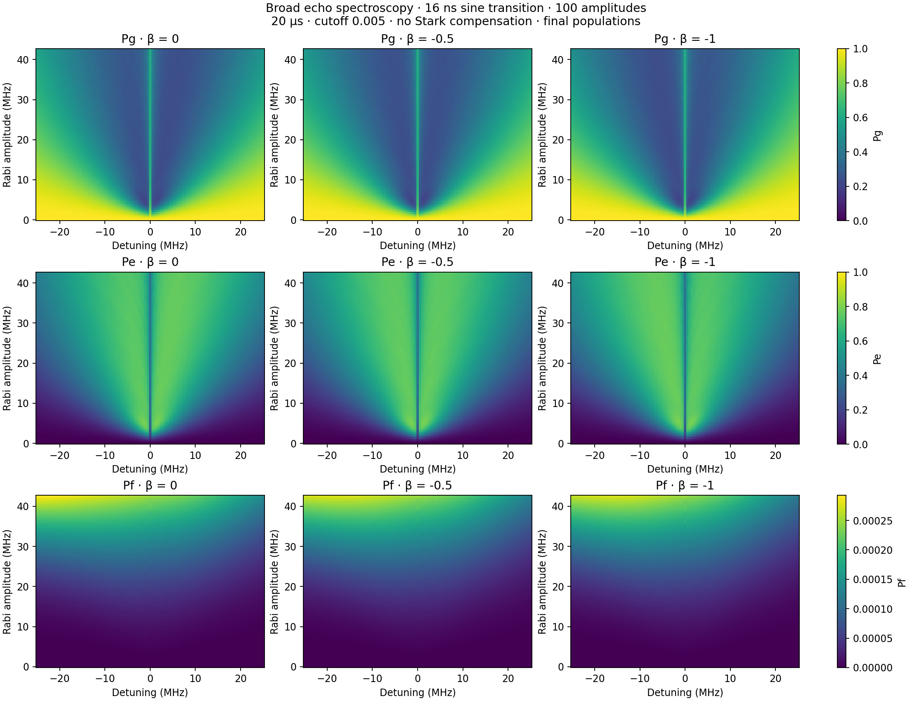
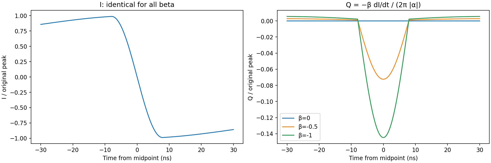

100 amplitude points over the original Figure 2 range (0–42.7 MHz). 20 µs pulse, cutoff 0.005, T1=51.24 µs, T2=7.31 µs, α=−216 MHz. Identical I envelopes; no Stark compensation. All results are simulated final populations. White map curves show directly located Pe minima.
The direct comparison uses the raw Pe minimum, refined quadratically, and a half-depth width after subtracting a linear background fitted to |detuning| ≥ 0.4 MHz. This operational width depends on the chosen background. No smoothing is applied.
The additional Gaussian center and linewidth use a Gaussian fit to Pe over ±0.3 MHz, with one-bin smoothing. Poor, weak, unresolved and clipped fits are omitted. The fit-quality plot and example fits expose deviations from a Gaussian shape.
| β | Pe minimum (kHz) | Half-depth width (kHz) | Max final Pf over narrow map (%) |
|---|---|---|---|
| 0 | 12.72 | 398.21 | 0.02547 |
| -0.5 | -0.05 | 407.77 | 0.02532 |
| -1 | -12.99 | 398.63 | 0.02531 |
These high-drive values are one slice of the amplitude-dependent curves below.
Direct center/linewidth CSV · Gaussian fits CSV · Parameters and convergence






{
"parameters": {
"duration_us": 20.0,
"t1_us": 51.24,
"t_phi_us": 7.871480508563624,
"anharmonicity_mhz": -216.0,
"cutoff": 0.005,
"order": 0.5,
"echo": true,
"echo_transition_shape": "sine",
"drag_beta": 0.0,
"stark_kappa_mhz_inv": 0.0,
"echo_transition_us": 0.016
},
"betas": [
0.0,
-0.5,
-1.0
],
"amplitude_points": 100,
"dt_ns": 0.5,
"summary": [
{
"beta": 0.0,
"max_final_pf": 0.0002546676489652022,
"accepted_fits": 84,
"high_drive_fit": {
"center_hz": -7507.9350390881955,
"fwhm_hz": 347676.50022814795,
"center_error_hz": 1780.0149425508478,
"fwhm_error_hz": 14787.225609895962,
"r_squared": 0.9608262609831165,
"contrast": 0.11554544679648009,
"accepted": true
},
"high_drive_direct": {
"center_hz": 12718.258527869088,
"fwhm_hz": 398213.23704693554,
"contrast": 0.14113732252700656,
"accepted": true
},
"max_population_error": 6.393080486111202e-07,
"max_checked_direct_center_error_hz": 0.33727053111215355,
"max_checked_direct_fwhm_error_hz": 0.716224953357596,
"max_checked_center_error_hz": 0.053445632332113746,
"max_checked_fwhm_error_hz": 1.2545736692263745
},
{
"beta": -0.5,
"max_final_pf": 0.0002532491681213938,
"accepted_fits": 84,
"high_drive_fit": {
"center_hz": 416.75857867143793,
"fwhm_hz": 349647.1526851461,
"center_error_hz": 278.40263682977957,
"fwhm_error_hz": 2367.324189281695,
"r_squared": 0.9989986255200359,
"contrast": 0.11649724142052333,
"accepted": true
},
"high_drive_direct": {
"center_hz": -49.00849372175474,
"fwhm_hz": 407767.53271627176,
"contrast": 0.14295984091135333,
"accepted": true
},
"max_population_error": 4.764055687722646e-07,
"max_checked_direct_center_error_hz": 0.0936370836056497,
"max_checked_direct_fwhm_error_hz": 0.40268137090606615,
"max_checked_center_error_hz": 0.02948157439334409,
"max_checked_fwhm_error_hz": 0.40354537102393806
},
{
"beta": -1.0,
"max_final_pf": 0.0002531457272064909,
"accepted_fits": 83,
"high_drive_fit": {
"center_hz": 8424.234834892999,
"fwhm_hz": 344180.5753728047,
"center_error_hz": 1851.0367649623677,
"fwhm_error_hz": 14960.493089784717,
"r_squared": 0.9578791320798242,
"contrast": 0.11334786839571889,
"accepted": true
},
"high_drive_direct": {
"center_hz": -12987.311970348654,
"fwhm_hz": 398632.7887951775,
"contrast": 0.14043772478525668,
"accepted": true
},
"max_population_error": 5.417603466950638e-07,
"max_checked_direct_center_error_hz": 0.26149378369336773,
"max_checked_direct_fwhm_error_hz": 0.8399251255905256,
"max_checked_center_error_hz": 0.09173623565948219,
"max_checked_fwhm_error_hz": 1.050553064676933
}
],
"source_runs": {
"broad": "2026-08-25/six_detuning_amplitude_sweeps/03_broad_50mhz_cutoff_0p005_echo",
"narrow": "2026-08-25/six_detuning_amplitude_sweeps/06_narrow_1mhz_cutoff_0p005_echo"
},
"convention": "I=L*s, no renormalization; Q=-beta*dI/dt/(2*pi*abs(alpha)); drive=I-iQ",
"direct_metrics": "Center: raw Pe minimum refined quadratically. Width: nearest half-depth crossings after subtracting linear background fitted on |detuning|>=0.4 MHz; finite-window operational width.",
"fitting": "Pe Gaussian dip on \u00b10.3 MHz after 1-bin Gaussian smoothing; FWHM=2sqrt(2ln2)*sigma. Require R2>=0.95, depth>=0.001, FWHM>=15 kHz, and both half-depth points inside fit window. Zero drive excluded. No uncertainty from fit covariance is interpreted as physical uncertainty.",
"caveat": "Final Pf, not transient peak leakage; three-level Markovian simulation. Fitted center and FWHM describe the Gaussian approximation, not necessarily the exact minimum or literal half-depth width."
}For β=−0.5, halving the detuning step from 5 to 2.5 kHz at three selected amplitudes changed the center by at most 0.026 Hz and the half-depth linewidth by 108.1 Hz. Refinement data